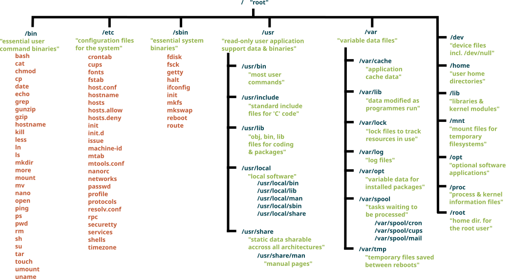

Короткий опис основних команд
Останнє оновлення 2026-07-09 | Редагувати цю сторінку
Короткий опис основних команд
| Дія | Для файлів | Для каталогів |
|---|---|---|
| Оглянути | ls | ls |
| Проглянути вміст | cat | ls |
| Перейти до … | cd | |
| Перемістити | mv | mv |
| Копіювати | cp | cp -r |
| Створити | nano | mkdir |
| Видалити | rm | rmdir, rm -r |
Ієрархія файлової системи
Нижче наведено огляд стандартної файлової системи Unix. Її точна ієрархія може відрізнятися залежно від платформи. Ваша структура файлів/каталогів може дещо відрізнятися:

Глосарій
- абсолютний шлях
- Шлях, який посилається на певне місце у файловій системі. Абсолютні шляхи зазвичай записуються відносно кореневого каталогу файлової системи та починаються з символів “/” (у Unix) або “\” (у Microsoft Windows). Див. також: відносний шлях.
- аргумент
- Значення, яке передається до функції або програми під час її запуску. Цей термін часто (та непослідовно) замінюється на параметр.
- командна оболонка
- Дивись термінал
- інтерфейс командного рядка
- Інтерфейс користувача, заснований на введенні команд, зазвичай у циклі REPL. Див. також: графічний інтерфейс користувача.
- коментар
-
Зауваження в програмі, яке пояснює код людині-читачеві, але ігнорується
комп’ютером. Коментарі у мовах Python, R та в терміналі Unix починаються
з символу
#та тривають до кінця відповідного рядка; коментарі в SQL починаються з--, а в інших мовах існують інші домовленості. - поточний робочий каталог
-
Каталог, з якого визначаються відносні
шляхи; тобто місце, де відбувається пошук файлів, вказаних лише за
назвою. Кожен процес має власний поточний робочий
каталог. На поточний робочий каталог зазвичай посилаються за допомогою
скорочення
.(тобто “крапка”). - файлова система
- Набір файлів, каталогів та пристроїв вводу/виводу (таких як клавіатури та екрани). Файлова система може бути розподіленою на кількох фізичних пристроях одразу, або декілька файлових систем можуть зберігатися на одному пристрої; доступом керує операційна система.
- розширення файлу
-
Частина імені файлу, яка йде після останнього символу “.”. За
домовленістю це визначає тип файлу:
.txtозначає “текстовий файл (від англ.”TeXT”),.pngозначає “файл портативної мережевої графіки” (від англ. “Portable Network Graphics file”), і так далі. Більшість операційних систем не наполягають на дотриманні цих домовленостей: цілком можливо (але призведе до плутанини!) назвати звуковий MP3 файлhomepage.html. Оскільки багато програм використовують розширення назв файлів для ідентифікації MIME типу файлу, неправильні назви файлів можуть призвести до збоїв у роботі відповідних застосунків. - фільтр
- Програма, яка перетворює потік даних. Багато інструментів командного рядка Unix написано у вигляді фільтрів: вони зчитують дані зі стандартного вводу, обробляють їх і записують результат у стандартний вивід.
- цикл for
- Цикл, який виконується один раз для кожного значення в деякому наборі, списку або діапазоні. Дивись також: цикл while.
- графічний інтерфейс користувача
- Інтерфейс користувача, у якому елементи й дії обираються на графічному екрані, зазвичай за допомогою миші. Дивись також: інтерфейс командного рядка.
- домашній каталог
- Каталог за замовчуванням, пов’язаний з обліковим записом у комп’ютерній системі. Зазвичай усі файли користувача зберігаються у домашньому каталозі або його підкаталогах.
- цикл
- Набір інструкцій, що виконується декілька разів. Складається з тіла циклу та (зазвичай) умови для виходу з нього. Дивись також: цикл for та цикл while.
- тіло циклу
- Набір операторів або команд, які повторюються всередині [циклу for]((#for-loop) чи циклу while.
- тип MIME
- Типи MIME (багатоцільові розширення інтернет-пошти, з англ. Multi-Purpose Internet Mail Extensions) описують різні типи файлів для обміну в Інтернеті через Інтернет, наприклад: зображення, аудіо та документи.
- операційна система
- Програмне забезпечення, що забезпечує взаємодію між користувачами, обладнанням і програмними процесами. Поширеними прикладами є Linux, macOS та Windows.
- опція
-
Спосіб вказати аргумент або параметр у програмі, що викликається з
командного рядка. Зазвичай програми для Unix використовують тире, за
яким слідує одна літера (наприклад,
-v) або два тире за якими слідує слово (наприклад,--verbose). Застосунки DOS натомість використовують скісну риску (наприклад/V). Залежно від програми, опція може супроводжуватися одним аргументом, наприклад-o /tmp/output.txt. - параметр
- Змінна в оголошенні функції, яка отримує значення при виклику функції. Цей термін часто (та непослідовно) замінюється на аргумент.
- батьківський каталог
-
Каталог, який “містить” каталог, про який йде мова. Кожен каталог у
файловій системі, окрім кореневого
каталогу, має батьківський каталог. На батьківський каталог зазвичай
посилаються за допомогою скороченого позначення
..(“крапка крапка”). - шлях
- Нотація, яка вказує розташування файлу або каталогу у файловій системі. Див. також: абсолютний шлях, відносний шлях.
- канал
- З’єднання виходу однієї програми зі входом іншої. Коли дві або більше програм з’єднані таким чином, вони називаються “конвеєром” (pipeline).
- процес
- Виконуваний екземпляр програми, який містить код, значення змінних, відкриті файли, мережеві з’єднання тощо. Процеси - це “актори”, якими керує операційна система; зазвичай вона виконує кожен процес по кілька мілісекунд за раз щоб створити враження, що вони виконуються одночасно.
- запит на введення
- Символ або символи, які виводяться циклом REPL, щоб показати, що він чекає на наступну команду.
- взяття в лапки
-
(в терміналі): Використання лапок різного типу із метою запобігання
інтерпретації командним рядком спеціальних символів. Наприклад, щоб
передати програмі рядок
*.txt, зазвичай потрібно записати його як'*.txt'(з одинарними лапками), щоб термінал не намагався розгорнути символ підстановки*. - цикл REPL
- (REPL): Інтерфейс командного рядка, який читає команду від користувача, виконує її, виводить результат і чекає на наступну команду.
- перенаправлення
- Надсилання виводу команди до файлу замість екрана чи іншої команди або читання її вхідних даних із файлу.
- регулярний вираз
- Шаблон, який визначає набір рядків символів. Регулярні вирази найчастіше використовуються для пошуку послідовностей символів у рядках.
- відносний шлях
- Шлях, який вказує розташування файлу або каталогу відносно поточного робочого каталогу. Будь-який шлях, який не починається з символу-розділювача (“/” або “\”), є відносним шляхом. Див. також: абсолютний шлях.
- кореневий каталог
- Найвищий каталог у файловій системі, від якого відгалужуються всі інші каталоги. Він позначається “/” в Unix (включаючи Linux і macOS) та “\” в Microsoft Windows.
- термінал
- (оболонка): Інтерфейс командного рядка, наприклад, Bash (Bourne-Again Shell) або DOS термінал у Microsoft Windows, що дозволяють користувачеві взаємодіяти з операційною системою.
- скрипт терміналу
- (скрипт оболонки): Набір команд терміналу, збережений у файлі для повторного використання. Скрипт терміналу - це програма, яку виконує термінал; назва “скрипт” використовується з історичних причин.
- стандартний ввід
- Потік вхідних даних, який процес використовує за замовчуванням. В інтерактивних програмах командного рядка, він зазвичай підключається до клавіатури. У каналі він отримує дані зі стандартного виводу попереднього процесу.
- стандартний вивід
- Вихідний потік процесу за замовчуванням. В інтерактивних програмах командного рядка, дані, надіслані на стандартний вивід, виводяться на екран; в каналі вони передаються до стандартного вводу наступного процесу.
- підкаталог
- Каталог, що міститься у іншому каталозі.
- автодоповнення
- (клавішею табуляції): Функція, що надається багатьма інтерактивними системами, в яких натискання клавіші Tab автоматично доповнює поточне слово або команду.
- змінна
- Ім’я у програмі, яке асоціюється зі значенням або набором значень.
- цикл while
- Цикл, який виконується до тих пір, поки певна умова є істинною. Дивись також: цикл for.
- символ підстановки
-
Символ, який використовується для зіставлення із шаблоном. У терміналі
Unix, шаблон
*відповідає нулю або більше символів; таким чином,*.txtвідповідає усім файлам, назви яких закінчуються на.txt.
Зовнішні джерела
Відкриття терміналу
- Як користуватися терміналом на Mac (матеріал англійською мовою)
- Git для Windows (матеріал англійською мовою)
- Як встановити термінал Bash на Windows 10 (матеріал англійською мовою)
- Встановлення та використання терміналу Linux Bash у Windows 10 (матеріал англійською мовою)
- Використання терміналу Bash у Windows 10 (матеріал англійською мовою)
- Використання емулятора UNIX/Linux (Cygwin) або клієнта Secure Shell (SSH) (Putty) (матеріал англійською мовою)
Документація
- Документація до компонентів проєкту GNU (матеріал англійською мовою)
- Ключові утиліти GNU (матеріал англійською мовою)
Різне
- Північнотихоокеанська течія
- Велика тихоокеанська сміттєва пляма
- ‘Забезпечення довговічності цифрової інформації’, автор Jeff Rothenberg (матеріал англійською мовою)
- Хайку про комп’ютерні помилки (матеріал англійською мовою)
- ‘Як правильно називати файли’, автор Jenny Bryan (матеріал англійською мовою)